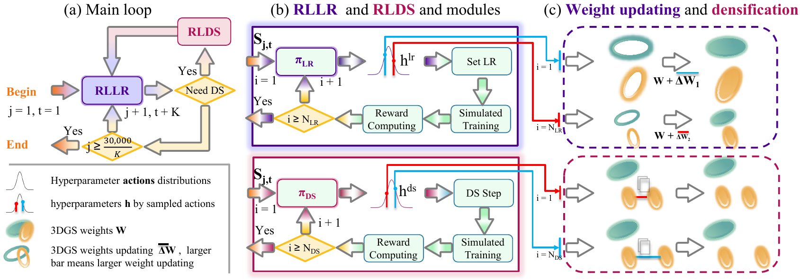
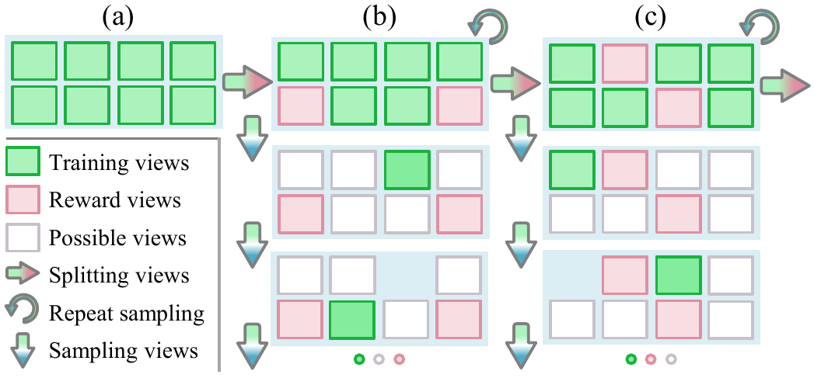
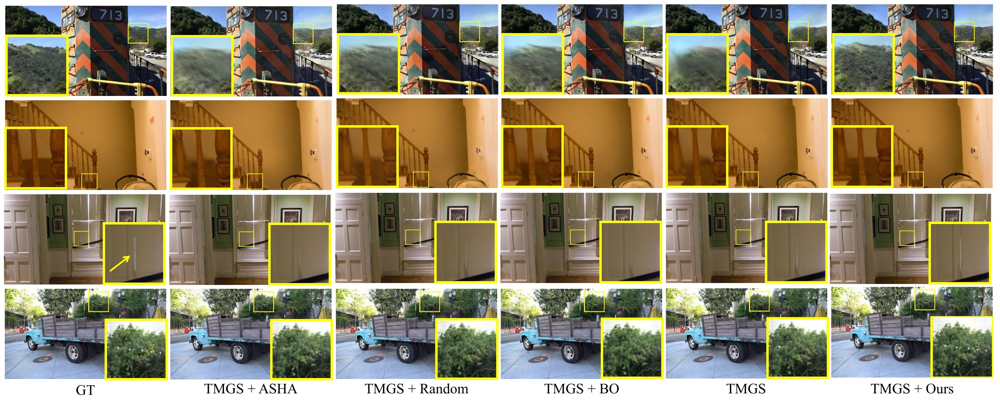
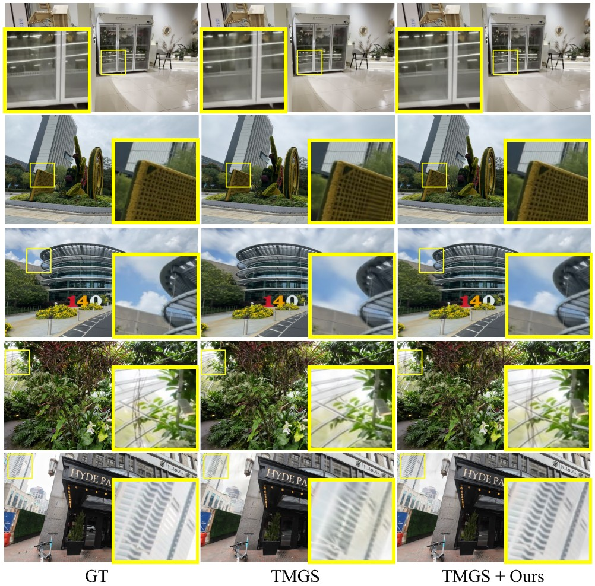

RLGS: Reinforcement Learning-Based Adaptive
Hyperparameter Tuning for Gaussian Splatting
WACV 2027
Code release:
Abstract
Hyperparameter tuning in 3D Gaussian Splatting (3DGS) [2] is a labor-intensive and expert-driven process, often resulting in inconsistent reconstructions and suboptimal results. We propose RLGS, a plug-and-play reinforcement learning framework for adaptive hyperparameter tuning in 3DGS through lightweight policy modules. RLGS dynamically adjusts critical hyperparameters such as learning rates and densification thresholds.
The framework is model-agnostic and integrates into existing 3DGS pipelines without architectural modifications. We demonstrate its generalization across multiple 3DGS variants, including Taming-3DGS [1] and 3DGS-MCMC [3], and validate its robustness across diverse datasets. RLGS improves Taming-3DGS by 0.7 dB PSNR on Tanks and Temples [4] under a fixed Gaussian budget, and continues to yield gains even when baseline performance saturates.
Method

RLGS treats hyperparameter tuning as an online reinforcement learning problem. It divides 3DGS optimization into short policy phases and uses two lightweight modules: RLLR adaptively scales learning rates, while RLDS adjusts densification hyperparameters.
At each phase, the policy observes the previous reconstruction loss and current training progress. It samples candidate actions, evaluates them through short simulated training runs from the same snapshot, and receives a reward based on PSNR improvement over the default action. The best-performing configuration is then applied to the actual training state.
Reward View Sampling

RLGS withholds a small set of reward views to measure multi-view improvement without biasing the policy toward the current training views. The split is periodically reshuffled so that every image contributes to training over time while the reward remains stable within each short interval.
Results
RLGS improves strong 3DGS backbones across public benchmarks and avoids the dozens of full runs required by conventional hyperparameter search.
Comparison with Hyperparameter Tuning Methods
| Method | Trials | Average PSNR ↑ | Average SSIM ↑ | Average LPIPS ↓ | Wall Time ↓ |
|---|---|---|---|---|---|
| TMGS [1] | 1 | 27.09 | 0.879 | 0.203 | 1× |
| TMGS + Random Search [5] | 64 | 26.79 | 0.883 | 0.203 | 64× |
| TMGS + Bayesian Optimization [6] | 64 | 27.04 | 0.884 | 0.202 | 64× |
| TMGS + ASHA [7] | 64 | 27.21 | 0.887 | 0.198 | 24× |
| TMGS + RLGS | 1 | 27.50 | 0.889 | 0.195 | 3× |

Generalization to DL3DV-140

On DL3DV-140 [9], RLGS improves TMGS from 29.75 to 29.96 dB PSNR, raises SSIM from 0.909 to 0.912, and reduces LPIPS from 0.131 to 0.125 across all 140 scenes. Qualitatively, it better preserves thin structures and fine textures.
BibTeX
@misc{li2025rlgs,
title = {RLGS: Reinforcement Learning-Based Adaptive Hyperparameter Tuning for Gaussian Splatting},
author = {Zhan Li and Huangying Zhan and Changyang Li and Qingan Yan and Yi Xu},
year = {2025},
eprint = {2508.04078},
archivePrefix = {arXiv},
primaryClass = {cs.GR},
url = {https://arxiv.org/abs/2508.04078}
}References
- Saswat Subhajyoti Mallick, Rahul Goel, Bernhard Kerbl, Markus Steinberger, Francisco Vicente Carrasco, and Fernando De La Torre. Taming 3DGS: High-Quality Radiance Fields with Limited Resources. In SIGGRAPH Asia 2024 Conference Papers, pages 1-11, 2024.
- Bernhard Kerbl, Georgios Kopanas, Thomas Leimkühler, and George Drettakis. 3D Gaussian Splatting for Real-Time Radiance Field Rendering. ACM Transactions on Graphics, 42(4), 2023.
- Shakiba Kheradmand, Daniel Rebain, Gopal Sharma, Weiwei Sun, Yang-Che Tseng, Hossam Isack, Abhishek Kar, Andrea Tagliasacchi, and Kwang Moo Yi. 3D Gaussian Splatting as Markov Chain Monte Carlo. Advances in Neural Information Processing Systems, 37:80965-80986, 2024.
- Arno Knapitsch, Jaesik Park, Qian-Yi Zhou, and Vladlen Koltun. Tanks and Temples: Benchmarking Large-Scale Scene Reconstruction. ACM Transactions on Graphics, 36(4):1-13, 2017.
- James Bergstra and Yoshua Bengio. Random Search for Hyper-Parameter Optimization. Journal of Machine Learning Research, 13(1):281-305, 2012.
- Jasper Snoek, Hugo Larochelle, and Ryan P. Adams. Practical Bayesian Optimization of Machine Learning Algorithms. Advances in Neural Information Processing Systems, 25, 2012.
- Liam Li, Kevin Jamieson, Afshin Rostamizadeh, Ekaterina Gonina, Jonathan Ben-tzur, Moritz Hardt, Benjamin Recht, and Ameet Talwalkar. A System for Massively Parallel Hyperparameter Tuning. In Proceedings of Machine Learning and Systems, pages 230-246, 2020.
- Peter Hedman, Julien Philip, True Price, Jan-Michael Frahm, George Drettakis, and Gabriel Brostow. Deep Blending for Free-Viewpoint Image-Based Rendering. In SIGGRAPH Asia 2018 Technical Papers, page 257, 2018.
- Lu Ling, Yichen Sheng, Zhi Tu, Wentian Zhao, Cheng Xin, Kun Wan, Lantao Yu, Qianyu Guo, Zixun Yu, Yawen Lu, et al. DL3DV-10K: A Large-Scale Scene Dataset for Deep Learning-Based 3D Vision. In Proceedings of the IEEE/CVF Conference on Computer Vision and Pattern Recognition, pages 22160-22169, 2024.
- Jonathan T. Barron, Ben Mildenhall, Dor Verbin, Pratul P. Srinivasan, and Peter Hedman. Mip-NeRF 360: Unbounded Anti-Aliased Neural Radiance Fields. In Proceedings of the IEEE/CVF Conference on Computer Vision and Pattern Recognition, pages 5470-5479, 2022.